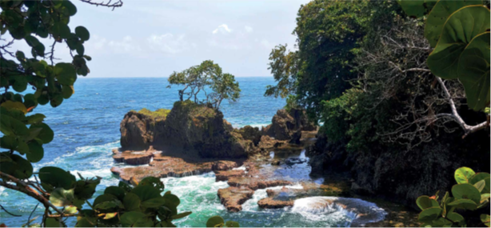

El aprovechamiento de oportunidades para la generación de desarrollo endógeno mediante la puesta en valor de recursos patrimoniales, requiere del manejo de diversos conceptos asociados. Como parte del marco conceptual del proyecto de extensión, a continuación, se presentan algunos de los términos empleados que ayudan a la comprensión de la temática de estudio.
“(…) no toda la cultura es patrimonio cultural, sino solo aquella parte de esta en la que reconocemos los valores propios del patrimonio en un proceso de selección crítica en el que los objetos o prácticas culturales son convertidos en bienes culturales (…) El patrimonio cultural es, por así decir, la objetivación y selección crítica de elementos de la cultura; es todo aquello que reconocemos, valoramos y deseamos conservar de la cultura.” (González-Varas, 2015).
“(...) la evidencia que identifica y distingue la cultura propia de la ajena; es el marco que da sentido y pertenencia a los diversos componentes de nuestro acervo cultural (…) comprende los bienes culturales que en el proceso de desarrollo histórico, una sociedad hace suyos, ya sea porque los creó (elementos culturales autóctonos) o porque los hace suyos, mediante la adopción o apropiación de significados.” (Chang, 2004).
“Es más que un espacio físico con determinadas características, se trata de una construcción social que se sustenta en atributos geográficos, históricos, sociales, culturales, de género, etc.; por tanto, pueden coexistir en un mismo territorio varias identidades, aunque debido a procesos sociales y políticos, alguna sea predominante.” (Ramírez, 2007).
“Son dos conceptos que tienden a confundirse o traslaparse. Esto se debe al inevitable enfoque territorial que ambos poseen, la necesaria implicación de los agentes sociales y la participación de la población en sus procesos. Sin embargo, algunos autores, señalan factores que los diferencian: El desarrollo endógeno puede ser local o regional (Boissier, 2002), lo importante es que exista una unidad territorial con características (culturales, productivas, etc.) compartidas por la población.
El desarrollo endógeno implica que la comunidad tiene la capacidad de liderar los procesos (Vázquez, 2002), por tanto no depende de agentes externos para gestionarlo. El desarrollo local no es solamente endógeno, puede basarse en el aprovechamiento de oportunidades exógenas, como la atracción de inversiones extranjeras o la solicitud de ayudas externas (Alburquerque, 2007).” (García, 2016).
“Se concibe como la recuperación y rehabilitación de los bienes culturales con el objetivo de dotarle de nuevos usos (turísticos, culturales, deportivos, residenciales, etc.) y reinsertarlo nuevamente en el tejido social para asegurar su protección. Se ajusta a lo que hoy día se entiende como conservación integrada, es decir, el resultado de la acción conjunta de técnicas de conservación, de investigación y adaptación de ese patrimonio a las necesidades de la sociedad del momento.” (Palacios e Hidalgo, 2009).
Las industrias culturales y las industrias creativas se entienden como “aquellos sectores de actividad organizada que tienen como objeto principal la producción o la reproducción, la promoción, la difusión y/o la comercialización de bienes, servicios y actividades de contenido cultural, artístico o patrimonial.” (UNESCO, 2017). Entre sus principales características se encuentran: la confluencia de la economía, la cultura y el derecho; incorporan la creatividad como componente central de la producción; y los bienes, servicios y actividades frecuentemente están protegidos por la propiedad intelectual y los derechos de autor.
Como parte del Marco de Estadísticas Culturales de la UNESCO (2009), se establecen los Dominios Culturales que incluyen el patrimonio cultural y natural; las presentaciones artísticas y celebraciones (artes escénicas, música, festivales y festividades); las artes visuales y artesanías; los libros y prensa; los medios audiovisuales e interactivos y el diseño y servicios creativos. A ello, se añaden los Dominios Relacionados que incluyen el turismo y, los deportes y la recreación.
Los Dominios Culturales representan un conjunto común de actividades económicas (producción de bienes y servicios) y sociales (participación en ‘eventos culturales’) que tradicionalmente se han considerado de naturaleza “cultural”. Por su parte, los Dominios Relacionados abarcan otras actividades económicas y sociales consideradas “parcialmente culturales” o más frecuentemente asociadas con actividades “recreacionales o de tiempo libre”, en lugar de aquellas “estrictamente culturales”. Finalmente, los dominios de educación y capacitación, archivística y preservación, y patrimonio cultural inmaterial se clasifican como Dominios Culturales Transversales de la actividad cultural y deben ser medidos en toda la gama de dominios sectoriales.
1. Museos
2. Sitios Arqueológicos e Históricos
3. Paisajes Culturales
4. Paisajes Naturales
5. Arquitectura
6. Elemento Urbano
7. Gastronomía
1. Artes Escénicas
2. Música
3. Festividades, Festivales y Ferias
1. Bellas Artes
2. Fotografía
3. Artesanía
1. Libros
2. Periódicos y Revistas
3. Otros Materiales Impresos
4. Bibliotecas
1. Filmes y Videos
2. Radio y Televisión
3. Podcast (Archivos Sonoros)
4. Juegos de Video
1. Moda
2. Diseño Gráfico
3. Diseño Interior
4. Paisajismo
5. Servicios de Arquitectura
6. Servicios de Publicidad
7. Diseño de Producto
1. Viajes contratados y servicios turísticos
2. Hospitalidad y hospedaje
1. Deportes
2. Acondicionamiento Físico y Bienestar
3. Parques de entretenimiento temático
4. Juegos de Azar